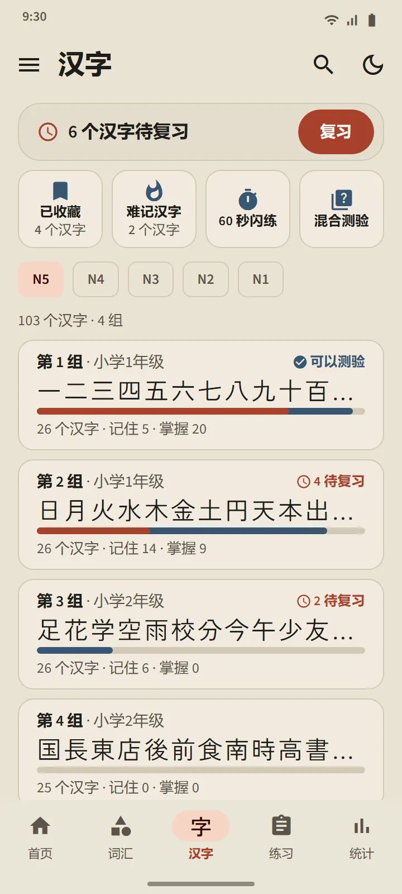
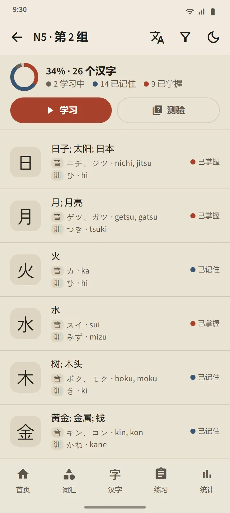
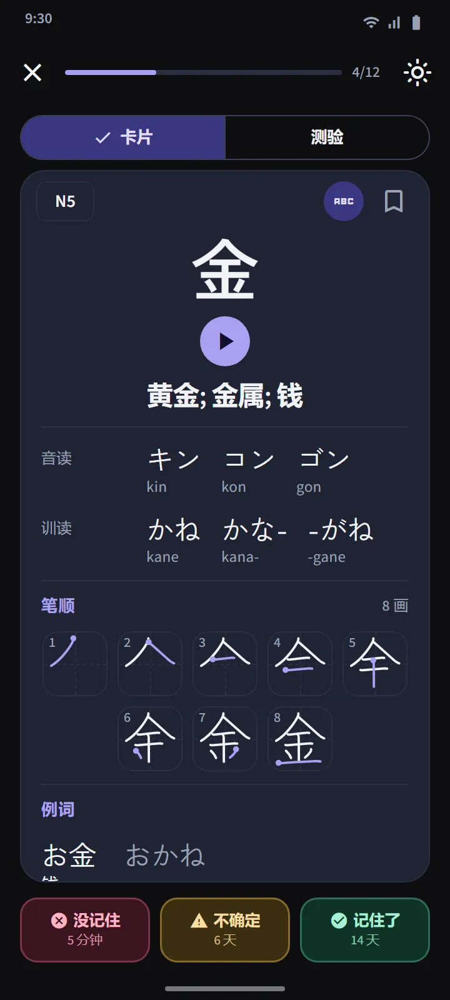
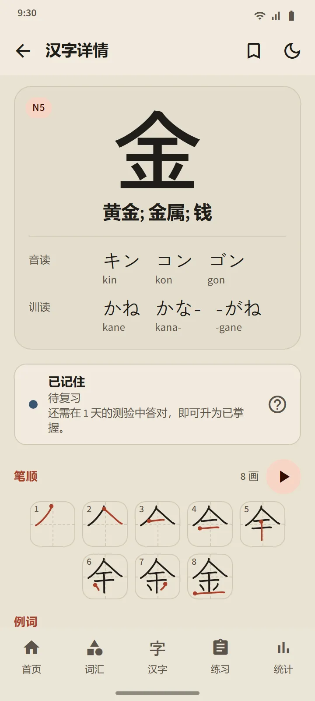
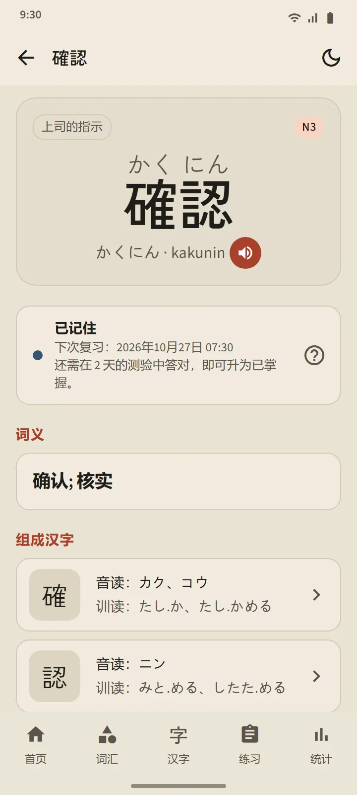
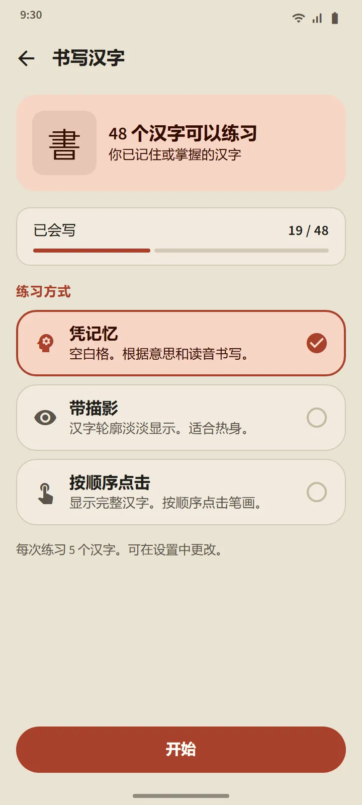
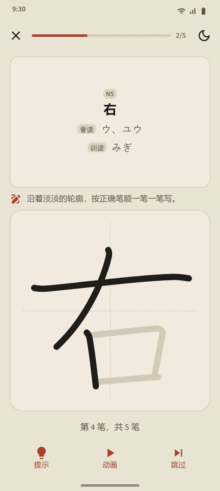

每组 25 个汉字，按日本学校的顺序
“汉字”标签页先按 JLPT 级别划分，再分成每组约 25 个汉字。在同一级别内，顺序依照日本学校的课程（先学 1 年级），然后按笔画数由少到多；属于同一系列的汉字，如数字、星期名称和季节，会保持原有顺序。每一组的那一行会显示它的汉字、进度条、已记住和已掌握的数量，以及“可以测验”的标签或到期的数量。
| 级别 | 汉字 | 使用权限 |
|---|---|---|
| N5 | 103 | 免费 |
| N4 | 181 | Premium |
| N3 | 370 | Premium |
| N2 | 369 | Premium |
| N1 | 1,207 | Premium |


汉字卡片和测验
卡片正面只有汉字本身。背面有：释义、音读与训读（需要的话附罗马字）、每一笔一个分解图并标出起笔点的笔顺图，以及使用该汉字的例词。与词汇卡片相同的三个按钮会重新安排它的复习。
一组的测验在有 10 个汉字达到“已记住”或“已掌握”时开放，共三种题型：由汉字选释义、由释义选汉字、由汉字选读音。“已掌握”的规则相同：在三个不同日子的测验中答对。标签页顶部的汉字复习会汇集所有组中到期的汉字，混合测验则跨组出题。

汉字详情和特别卡组
每个汉字的详情页包含它的释义、阶段和下次复习时间、读音、笔顺图和例词；单词的详情页则链接到它的组成汉字。与词汇一样，汉字也有已收藏、难记汉字和 60 秒闪练卡组，首页“快速练习”部分的一个开关可以把其中四个方块切换成汉字版本。


用手指书写汉字
已处于“已记住”或“已掌握”阶段的汉字可以通过书写来练习：页面只显示释义和读音，你一笔一画地书写，每一笔的形状、方向和顺序都会被检查，而且离线也能使用。共有三种模式：凭记忆、带描影和按顺序点击。当你在两个不同的日子都不借助提示、凭记忆写出某个汉字后，它就算“已会写”。


汉字入门
开始记汉字之前，介绍汉字构成规律的 11 节短课：音读与训读及其使用时机、送假名、促音和连浊等音变、整词记忆的读音、部首以及笔顺。从首页的“日语基础”部分打开，免费。
数据来源
释义和读音来自 KANJIDIC（Electronic Dictionary Research and Development Group），笔顺来自 KanjiVG，两者都采用 CC BY-SA 许可。汉字级别是根据旧版 JLPT 词表估算的；现行的 JLPT 并不公布官方汉字表。